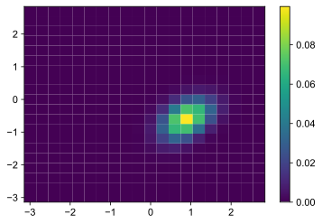
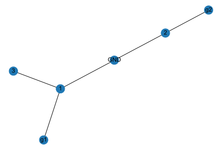
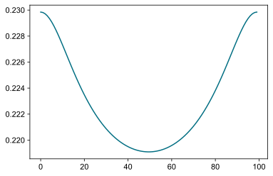
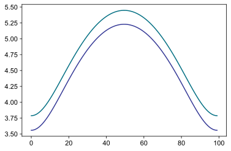
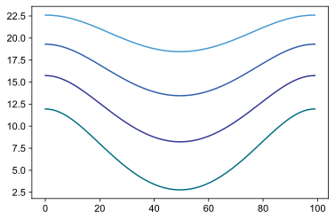
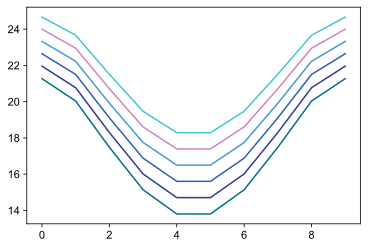
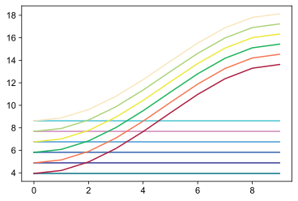
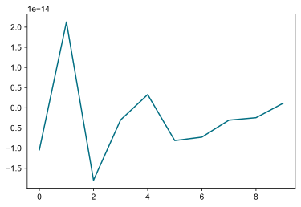

[1]:
import sys
sys.path.insert(0,r"E:\Github\scqubits")
[2]:
%matplotlib inline
%config InlineBackend.figure_format = 'svg'
import matplotlib.pyplot as plt
import scqubits as qubit
import importlib as imp
imp.reload(qubit)
import numpy as np
# import networkx as nx
import tqdm
The Hamiltonian parameters are
\(E_{J}=\frac{\hbar I_C}{2e}\) Josephson junction critical current,
\(E_{C}=\frac{e^2}{2C}\) Charge energy,
\(E_{L}=(\frac{\hbar}{2e})^2\frac{1}{2L}\) Inductor energy.
\(\Phi_x = \frac{2e \Phi}{\hbar}\) External applied flux, in units of radians
where 2e=1 and \(\hbar\)=1 * \(I_C=E_{J}\) , * $C=:nbsphinx-math:frac{1}{8E_c} $ * \(L=\frac{1}{2E_{L}}\) Inverse superinductor inductance.
Defining circuit topology¶
[8]:
flux_qubit = qubit.Circuit()
flux_qubit.add_element(qubit.Capacitance('Cg1'), ['g1', '1'])
flux_qubit.add_element(qubit.Capacitance('Cg2'), ['g2', '2'])
flux_qubit.add_element(qubit.Capacitance('CJ1'), ['GND', '1'])
flux_qubit.add_element(qubit.Capacitance('CJ2'), ['GND', '2'])
flux_qubit.add_element(qubit.Capacitance('CJ3'), ['1', '3'])
flux_qubit.add_element(qubit.JosephsonJunction('J1'), ['GND', '1'])
flux_qubit.add_element(qubit.JosephsonJunction('J2'), ['GND', '2'])
flux_qubit.add_element(qubit.JosephsonJunction('J3'), ['1', '3'])
Parametrizing Hamiltonian¶
[9]:
ϕ1 = qubit.Variable('ϕ_1')
ϕ2 = qubit.Variable('ϕ_2')
f = qubit.Variable('f')
g1 = qubit.Variable('g_1')
g2 = qubit.Variable('g_2')
flux_qubit.add_variable(ϕ1)
flux_qubit.add_variable(ϕ2)
flux_qubit.add_variable(f)
flux_qubit.add_variable(g1)
flux_qubit.add_variable(g2)
Mapping nodal phases to variables¶
[44]:
"""
A*x=b, b is a node vector=['GND', '1', '2', '3', 'g1', 'g2']
x is a variable vector= ['ϕ_1', 'ϕ_2', 'f', 'g_1', 'g_2']
f - external flux, and should be specified as an additional node and a variable
"""
flux_qubit.map_nodes_linear(['GND', '1', '2', '3', 'g1', 'g2'],
['ϕ_1', 'ϕ_2', 'f', 'g_1', 'g_2'],
np.asarray([[0, 0, 0, 0, 0],
[1, 0, 0, 0, 0],
[0, 1, 0, 0, 0],
[0, 1, -1, 0, 0],
[0, 0, 0, 1, 0],
[0, 0, 0, 0, 1]]))
[45]:
sympy.nsimplify(flux_qubit.symbolic_lagrangian())
[45]:
$\displaystyle - E_{J1} \left(1 - \cos{\left(ϕ_{1} \right)}\right) - E_{J2} \left(1 - \cos{\left(ϕ_{2} \right)}\right) - E_{J3} \left(1 - \cos{\left(f + ϕ_{1} - ϕ_{2} \right)}\right) + \partial_tg_1 \left(\frac{C_{g1} \partial_tg_1}{2} - \frac{C_{g1} \partial_tϕ_1}{2}\right) + \partial_tg_2 \left(\frac{C_{g2} \partial_tg_2}{2} - \frac{C_{g2} \partial_tϕ_2}{2}\right) + \partial_tϕ_1 \left(- C_{J3} \left(- \frac{\partial_tf}{2} + \frac{\partial_tϕ_2}{2}\right) - \frac{C_{g1} \partial_tg_1}{2} + \frac{\partial_tϕ_1 \left(C_{J1} + C_{J3} + C_{g1}\right)}{2}\right) + \partial_tϕ_2 \left(- \frac{C_{g2} \partial_tg_2}{2} + \frac{\partial_tϕ_2 \left(C_{J2} + C_{g2}\right)}{2}\right) + \left(- \partial_tf + \partial_tϕ_2\right) \left(- \frac{C_{J3} \partial_tϕ_1}{2} + C_{J3} \left(- \frac{\partial_tf}{2} + \frac{\partial_tϕ_2}{2}\right)\right)$
Separating variables into external controls and degrees of freedom¶
[30]:
ϕ1.create_grid(21, 1) # 21 charge states, 2pi wavefunction periodicity
ϕ2.create_grid(21, 1) # 21 charge states, 2pi wavefunction periodicity
f.set_parameter(0.4*2*np.pi, 0) # external flux: 0.4 quantum, external voltage: 0
g1.set_parameter(0, 0) # external flux: 0 quanta, external voltage: 0
g2.set_parameter(0, 0) # external flux: 0 quanta, external voltage: 0
Printing symbolic Hamiltonian (using sympy)¶
This part is a bit ugly, but in principle we could improve it so it uses better notation
[31]:
import sympy
C_g1, C_g2, C_J1, C_J2, C_J3, E_J1, E_J2, E_J3 = \
sympy.symbols('C_g1, C_g2, C_J1, C_J2, C_J3, E_J1, E_J2, E_J3')
flux_qubit.find_element('Cg1').set_capacitance(C_g1)
flux_qubit.find_element('Cg2').set_capacitance(C_g2)
flux_qubit.find_element('CJ1').set_capacitance(C_J1)
flux_qubit.find_element('CJ2').set_capacitance(C_J2)
flux_qubit.find_element('CJ3').set_capacitance(C_J3)
flux_qubit.find_element('J1').set_critical_current(E_J1)
flux_qubit.find_element('J2').set_critical_current(E_J2)
flux_qubit.find_element('J3').set_critical_current(E_J3)
capacitance matrix in terms of the nodal parameterization¶
[22]:
flux_qubit.capacitance_matrix(symbolic=True)
[22]:
$\displaystyle \left[\begin{matrix}C_{J1} + C_{J2} & 0.0 & - C_{J1} & 0.0 & - C_{J2} & 0.0\\0.0 & C_{g1} & - C_{g1} & 0.0 & 0.0 & 0.0\\- C_{J1} & - C_{g1} & C_{J1} + C_{J3} + C_{g1} & 0.0 & 0.0 & - C_{J3}\\0.0 & 0.0 & 0.0 & C_{g2} & - C_{g2} & 0.0\\- C_{J2} & 0.0 & 0.0 & - C_{g2} & C_{J2} + C_{g2} & 0.0\\0.0 & 0.0 & - C_{J3} & 0.0 & 0.0 & C_{J3}\end{matrix}\right]$
Legendre transform of the capacitance matrix (inverse wrt to degrees of freedom)¶
[36]:
flux_qubit.capacitance_matrix_legendre_transform(symbolic=True)
[36]:
$\displaystyle \left[\begin{matrix}\frac{1}{C_{J2} + C_{J3} + C_{g1}} & 0 & - \frac{C_{J2} - C_{J3}}{C_{J2} + C_{J3} + C_{g1}} & - \frac{C_{J2} - C_{g1}}{C_{J2} + C_{J3} + C_{g1}} & - \frac{C_{J2}}{C_{J2} + C_{J3} + C_{g1}}\\0 & \frac{1}{C_{J1} + C_{g2}} & - \frac{C_{J1}}{C_{J1} + C_{g2}} & - \frac{C_{J1}}{C_{J1} + C_{g2}} & - \frac{C_{J1} - C_{g2}}{C_{J1} + C_{g2}}\\\frac{- C_{J2} + C_{J3}}{C_{J2} + C_{J3} + C_{g1}} & - \frac{C_{J1}}{C_{J1} + C_{g2}} & \frac{C_{J1}^{2}}{C_{J1} + C_{g2}} + \frac{\left(C_{J2} - C_{J3}\right)^{2}}{C_{J2} + C_{J3} + C_{g1}} & \frac{C_{J1}^{2}}{C_{J1} + C_{g2}} + \frac{\left(C_{J2} - C_{J3}\right) \left(C_{J2} - C_{g1}\right)}{C_{J2} + C_{J3} + C_{g1}} & \frac{C_{J1} \left(C_{J1} - C_{g2}\right)}{C_{J1} + C_{g2}} + \frac{C_{J2} \left(C_{J2} - C_{J3}\right)}{C_{J2} + C_{J3} + C_{g1}}\\\frac{- C_{J2} + C_{g1}}{C_{J2} + C_{J3} + C_{g1}} & - \frac{C_{J1}}{C_{J1} + C_{g2}} & \frac{C_{J1}^{2}}{C_{J1} + C_{g2}} + \frac{\left(C_{J2} - C_{J3}\right) \left(C_{J2} - C_{g1}\right)}{C_{J2} + C_{J3} + C_{g1}} & \frac{C_{J1}^{2}}{C_{J1} + C_{g2}} + \frac{\left(C_{J2} - C_{g1}\right)^{2}}{C_{J2} + C_{J3} + C_{g1}} & \frac{C_{J1} \left(C_{J1} - C_{g2}\right)}{C_{J1} + C_{g2}} + \frac{C_{J2} \left(C_{J2} - C_{g1}\right)}{C_{J2} + C_{J3} + C_{g1}}\\- \frac{C_{J2}}{C_{J2} + C_{J3} + C_{g1}} & \frac{- C_{J1} + C_{g2}}{C_{J1} + C_{g2}} & \frac{C_{J1} \left(C_{J1} - C_{g2}\right)}{C_{J1} + C_{g2}} + \frac{C_{J2} \left(C_{J2} - C_{J3}\right)}{C_{J2} + C_{J3} + C_{g1}} & \frac{C_{J1} \left(C_{J1} - C_{g2}\right)}{C_{J1} + C_{g2}} + \frac{C_{J2} \left(C_{J2} - C_{g1}\right)}{C_{J2} + C_{J3} + C_{g1}} & \frac{C_{J2}^{2}}{C_{J2} + C_{J3} + C_{g1}} + \frac{\left(C_{J1} - C_{g2}\right)^{2}}{C_{J1} + C_{g2}}\end{matrix}\right]$
Symbolic lagrangian¶
[37]:
sympy.nsimplify(flux_qubit.symbolic_lagrangian())
[37]:
$\displaystyle - E_{J1} \left(1 - \cos{\left(f + g_{1} + g_{2} + ϕ_{2} \right)}\right) - E_{J2} \left(1 - \cos{\left(f + g_{1} + g_{2} + ϕ_{1} \right)}\right) - E_{J3} \left(1 - \cos{\left(f - ϕ_{1} \right)}\right) + \partial_tf \left(\frac{C_{J3} \partial_tf}{2} - \frac{C_{J3} \partial_tϕ_1}{2}\right) + \partial_tg_1 \left(\frac{C_{g1} \partial_tg_1}{2} - \frac{C_{g1} \partial_tϕ_1}{2}\right) + \partial_tg_2 \left(\frac{C_{g2} \partial_tg_2}{2} - \frac{C_{g2} \partial_tϕ_2}{2}\right) + \partial_tϕ_1 \left(- C_{J1} \left(\frac{\partial_tf}{2} + \frac{\partial_tg_1}{2} + \frac{\partial_tg_2}{2} + \frac{\partial_tϕ_1}{2} + \frac{\partial_tϕ_2}{2}\right) - \frac{C_{J3} \partial_tf}{2} - \frac{C_{g1} \partial_tg_1}{2} + \frac{\partial_tϕ_1 \left(C_{J1} + C_{J3} + C_{g1}\right)}{2}\right) + \partial_tϕ_2 \left(- C_{J2} \left(\frac{\partial_tf}{2} + \frac{\partial_tg_1}{2} + \frac{\partial_tg_2}{2} + \frac{\partial_tϕ_1}{2} + \frac{\partial_tϕ_2}{2}\right) - \frac{C_{g2} \partial_tg_2}{2} + \frac{\partial_tϕ_2 \left(C_{J2} + C_{g2}\right)}{2}\right) + \left(- \frac{C_{J1} \partial_tϕ_1}{2} - \frac{C_{J2} \partial_tϕ_2}{2} + \left(C_{J1} + C_{J2}\right) \left(\frac{\partial_tf}{2} + \frac{\partial_tg_1}{2} + \frac{\partial_tg_2}{2} + \frac{\partial_tϕ_1}{2} + \frac{\partial_tϕ_2}{2}\right)\right) \left(\partial_tf + \partial_tg_1 + \partial_tg_2 + \partial_tϕ_1 + \partial_tϕ_2\right)$
Symbolic hamiltonian¶
[10]:
sympy.nsimplify(flux_qubit.symbolic_hamiltonian())
[10]:
$\displaystyle E_{J1} \left(1 - \cos{\left(ϕ_{1} \right)}\right) + E_{J2} \left(1 - \cos{\left(ϕ_{2} \right)}\right) + E_{J3} \left(1 - \cos{\left(f + ϕ_{1} - ϕ_{2} \right)}\right) + \frac{\partial_tf \left(\partial_tf \left(C_{J3} \left(- \frac{C_{J3}^{2}}{- C_{J3}^{2} + \left(C_{J1} + C_{J3} + C_{g1}\right) \left(C_{J2} + C_{J3} + C_{g2}\right)} + \frac{C_{J3} \left(C_{J2} + C_{J3} + C_{g2}\right)}{- C_{J3}^{2} + \left(C_{J1} + C_{J3} + C_{g1}\right) \left(C_{J2} + C_{J3} + C_{g2}\right)}\right) - C_{J3} \left(\frac{C_{J3}^{2}}{- C_{J3}^{2} + \left(C_{J1} + C_{J3} + C_{g1}\right) \left(C_{J2} + C_{J3} + C_{g2}\right)} - \frac{C_{J3} \left(C_{J1} + C_{J3} + C_{g1}\right)}{- C_{J3}^{2} + \left(C_{J1} + C_{J3} + C_{g1}\right) \left(C_{J2} + C_{J3} + C_{g2}\right)}\right)\right) + \partial_tg_1 \left(\frac{C_{J3}^{2} C_{g1}}{- C_{J3}^{2} + \left(C_{J1} + C_{J3} + C_{g1}\right) \left(C_{J2} + C_{J3} + C_{g2}\right)} - \frac{C_{J3} C_{g1} \left(C_{J2} + C_{J3} + C_{g2}\right)}{- C_{J3}^{2} + \left(C_{J1} + C_{J3} + C_{g1}\right) \left(C_{J2} + C_{J3} + C_{g2}\right)}\right) + \partial_tg_2 \left(- \frac{C_{J3}^{2} C_{g2}}{- C_{J3}^{2} + \left(C_{J1} + C_{J3} + C_{g1}\right) \left(C_{J2} + C_{J3} + C_{g2}\right)} + \frac{C_{J3} C_{g2} \left(C_{J1} + C_{J3} + C_{g1}\right)}{- C_{J3}^{2} + \left(C_{J1} + C_{J3} + C_{g1}\right) \left(C_{J2} + C_{J3} + C_{g2}\right)}\right) - i \partial_{ϕ_1} \left(\frac{C_{J3}^{2}}{- C_{J3}^{2} + \left(C_{J1} + C_{J3} + C_{g1}\right) \left(C_{J2} + C_{J3} + C_{g2}\right)} - \frac{C_{J3} \left(C_{J2} + C_{J3} + C_{g2}\right)}{- C_{J3}^{2} + \left(C_{J1} + C_{J3} + C_{g1}\right) \left(C_{J2} + C_{J3} + C_{g2}\right)}\right) - i \partial_{ϕ_2} \left(- \frac{C_{J3}^{2}}{- C_{J3}^{2} + \left(C_{J1} + C_{J3} + C_{g1}\right) \left(C_{J2} + C_{J3} + C_{g2}\right)} + \frac{C_{J3} \left(C_{J1} + C_{J3} + C_{g1}\right)}{- C_{J3}^{2} + \left(C_{J1} + C_{J3} + C_{g1}\right) \left(C_{J2} + C_{J3} + C_{g2}\right)}\right)\right)}{2} + \frac{\partial_tg_1 \left(\frac{C_{J3} C_{g1} C_{g2} \partial_tg_2}{- C_{J3}^{2} + \left(C_{J1} + C_{J3} + C_{g1}\right) \left(C_{J2} + C_{J3} + C_{g2}\right)} - \frac{i C_{J3} C_{g1} \partial_{ϕ_2}}{- C_{J3}^{2} + \left(C_{J1} + C_{J3} + C_{g1}\right) \left(C_{J2} + C_{J3} + C_{g2}\right)} + \frac{C_{g1}^{2} \partial_tg_1 \left(C_{J2} + C_{J3} + C_{g2}\right)}{- C_{J3}^{2} + \left(C_{J1} + C_{J3} + C_{g1}\right) \left(C_{J2} + C_{J3} + C_{g2}\right)} - C_{g1} \partial_tf \left(- \frac{C_{J3}^{2}}{- C_{J3}^{2} + \left(C_{J1} + C_{J3} + C_{g1}\right) \left(C_{J2} + C_{J3} + C_{g2}\right)} + \frac{C_{J3} \left(C_{J2} + C_{J3} + C_{g2}\right)}{- C_{J3}^{2} + \left(C_{J1} + C_{J3} + C_{g1}\right) \left(C_{J2} + C_{J3} + C_{g2}\right)}\right) - \frac{i C_{g1} \partial_{ϕ_1} \left(C_{J2} + C_{J3} + C_{g2}\right)}{- C_{J3}^{2} + \left(C_{J1} + C_{J3} + C_{g1}\right) \left(C_{J2} + C_{J3} + C_{g2}\right)}\right)}{2} + \frac{\partial_tg_2 \left(\frac{C_{J3} C_{g1} C_{g2} \partial_tg_1}{- C_{J3}^{2} + \left(C_{J1} + C_{J3} + C_{g1}\right) \left(C_{J2} + C_{J3} + C_{g2}\right)} - \frac{i C_{J3} C_{g2} \partial_{ϕ_1}}{- C_{J3}^{2} + \left(C_{J1} + C_{J3} + C_{g1}\right) \left(C_{J2} + C_{J3} + C_{g2}\right)} + \frac{C_{g2}^{2} \partial_tg_2 \left(C_{J1} + C_{J3} + C_{g1}\right)}{- C_{J3}^{2} + \left(C_{J1} + C_{J3} + C_{g1}\right) \left(C_{J2} + C_{J3} + C_{g2}\right)} - C_{g2} \partial_tf \left(\frac{C_{J3}^{2}}{- C_{J3}^{2} + \left(C_{J1} + C_{J3} + C_{g1}\right) \left(C_{J2} + C_{J3} + C_{g2}\right)} - \frac{C_{J3} \left(C_{J1} + C_{J3} + C_{g1}\right)}{- C_{J3}^{2} + \left(C_{J1} + C_{J3} + C_{g1}\right) \left(C_{J2} + C_{J3} + C_{g2}\right)}\right) - \frac{i C_{g2} \partial_{ϕ_2} \left(C_{J1} + C_{J3} + C_{g1}\right)}{- C_{J3}^{2} + \left(C_{J1} + C_{J3} + C_{g1}\right) \left(C_{J2} + C_{J3} + C_{g2}\right)}\right)}{2} - \frac{i \partial_{ϕ_1} \left(\frac{C_{J3} C_{g2} \partial_tg_2}{- C_{J3}^{2} + \left(C_{J1} + C_{J3} + C_{g1}\right) \left(C_{J2} + C_{J3} + C_{g2}\right)} - \frac{i C_{J3} \partial_{ϕ_2}}{- C_{J3}^{2} + \left(C_{J1} + C_{J3} + C_{g1}\right) \left(C_{J2} + C_{J3} + C_{g2}\right)} + \frac{C_{g1} \partial_tg_1 \left(C_{J2} + C_{J3} + C_{g2}\right)}{- C_{J3}^{2} + \left(C_{J1} + C_{J3} + C_{g1}\right) \left(C_{J2} + C_{J3} + C_{g2}\right)} + \partial_tf \left(\frac{C_{J3}^{2}}{- C_{J3}^{2} + \left(C_{J1} + C_{J3} + C_{g1}\right) \left(C_{J2} + C_{J3} + C_{g2}\right)} - \frac{C_{J3} \left(C_{J2} + C_{J3} + C_{g2}\right)}{- C_{J3}^{2} + \left(C_{J1} + C_{J3} + C_{g1}\right) \left(C_{J2} + C_{J3} + C_{g2}\right)}\right) - \frac{i \partial_{ϕ_1} \left(C_{J2} + C_{J3} + C_{g2}\right)}{- C_{J3}^{2} + \left(C_{J1} + C_{J3} + C_{g1}\right) \left(C_{J2} + C_{J3} + C_{g2}\right)}\right)}{2} - \frac{i \partial_{ϕ_2} \left(\frac{C_{J3} C_{g1} \partial_tg_1}{- C_{J3}^{2} + \left(C_{J1} + C_{J3} + C_{g1}\right) \left(C_{J2} + C_{J3} + C_{g2}\right)} - \frac{i C_{J3} \partial_{ϕ_1}}{- C_{J3}^{2} + \left(C_{J1} + C_{J3} + C_{g1}\right) \left(C_{J2} + C_{J3} + C_{g2}\right)} + \frac{C_{g2} \partial_tg_2 \left(C_{J1} + C_{J3} + C_{g1}\right)}{- C_{J3}^{2} + \left(C_{J1} + C_{J3} + C_{g1}\right) \left(C_{J2} + C_{J3} + C_{g2}\right)} + \partial_tf \left(- \frac{C_{J3}^{2}}{- C_{J3}^{2} + \left(C_{J1} + C_{J3} + C_{g1}\right) \left(C_{J2} + C_{J3} + C_{g2}\right)} + \frac{C_{J3} \left(C_{J1} + C_{J3} + C_{g1}\right)}{- C_{J3}^{2} + \left(C_{J1} + C_{J3} + C_{g1}\right) \left(C_{J2} + C_{J3} + C_{g2}\right)}\right) - \frac{i \partial_{ϕ_2} \left(C_{J1} + C_{J3} + C_{g1}\right)}{- C_{J3}^{2} + \left(C_{J1} + C_{J3} + C_{g1}\right) \left(C_{J2} + C_{J3} + C_{g2}\right)}\right)}{2}$
Replacing symbolic circuit parameters with some numbers¶
[6]:
RATIO = 60.0
ALPHA = 0.8
flux_qubit.find_element('J1').set_critical_current(1.0)
flux_qubit.find_element('J2').set_critical_current(1.0)
flux_qubit.find_element('J3').set_critical_current(1.0*ALPHA)
flux_qubit.find_element('CJ1').set_capacitance(1/(8*1.0/RATIO))
flux_qubit.find_element('CJ2').set_capacitance(1/(8*1.0/RATIO))
flux_qubit.find_element('CJ3').set_capacitance(1/(8*1.0/RATIO/ALPHA))
flux_qubit.find_element('Cg1').set_capacitance(1/(8*50.0/RATIO))
flux_qubit.find_element('Cg2').set_capacitance(1/(8*50.0/RATIO))
Eigenvalues and eigensystem using scqubit tools¶
[7]:
flux_qubit.plot_potential()
---------------------------------------------------------------------------
AttributeError Traceback (most recent call last)
<ipython-input-7-f921d35aefb5> in <module>
----> 1 flux_qubit.plot_potential()
AttributeError: 'Circuit' object has no attribute 'plot_potential'
[8]:
vals, vecs= flux_qubit.eigensys()
[9]:
vals
#vecs_phase = np.conj(unitary).T@vecs
vals - vals[0]
[9]:
array([0. , 0.26299666, 0.29339598, 0.50146767, 0.55310417,
0.57154646])
Eigenvalues using circuit tools¶
[10]:
flux_qubit.calculate_potentials()
vals, vecs = flux_qubit.diagonalize_phase(num_states=6)
[11]:
np.real(vals-vals[0])
[11]:
array([0. , 0.26299666, 0.29339598, 0.50146767, 0.55310417,
0.57154646])
[18]:
import matplotlib.pyplot as plt
vecs = np.reshape(vecs, (21,21,6))
plt.pcolormesh(ϕ1.get_phase_grid(), ϕ2.get_phase_grid(), np.abs(vecs[:,:,0])**2)
plt.colorbar()
np.sum(np.abs(vecs[:,:,0])**2)
[18]:
1.0000000000000142

[ ]:
[4]:
flux_qubit.nodes_grap
[4]:
[('g1', '1'),
('g2', '2'),
('GND', '1'),
('GND', '2'),
('1', '3'),
('GND', '1'),
('GND', '2'),
('1', '3')]
[7]:
G=nx.Graph(flux_qubit.nodes_graph)
[8]:
nx.draw(G,with_labels=True)

[28]:
flux_qubit.wires
[28]:
[('Cg1', 'g1'),
('Cg1', '1'),
('Cg2', 'g2'),
('Cg2', '2'),
('CJ1', 'GND'),
('CJ1', '1'),
('CJ2', 'GND'),
('CJ2', '2'),
('CJ3', '1'),
('CJ3', '3'),
('J1', 'GND'),
('J1', '1'),
('J2', 'GND'),
('J2', '2'),
('J3', '1'),
('J3', '3')]
Transmon qubit¶
[33]:
Transmon = qubit.Circuit()
Transmon.add_element(qubit.JosephsonJunction('JJ1'), ['GND', '1'])
Transmon.add_element(qubit.JosephsonJunction('JJ2'), ['1', '2'])
Transmon.add_element(qubit.Capacitance('Cq'), ['GND', '1'])
[34]:
phi1 = qubit.Variable('φ1')
f = qubit.Variable('f')
ng = qubit.Variable('ng')
[35]:
phi1.create_grid(32,1)
Transmon.add_variable(phi1)
Transmon.add_variable(f)
Transmon.add_variable(ng)
[36]:
Transmon.map_nodes_linear(['GND', '1' , '2'],
['φ1', 'f','ng' ],
np.asarray([[0,0,1],[1,0,0],[0,1,1]]))
[28]:
import sympy
C, C_J1, C_J2, E_J1, E_J2 = \
sympy.symbols('C, C_J1, C_J2, E_J1, E_J2')
Transmon.find_element('C').set_capacitance(C)
# Transmon.find_element('CJ1').set_capacitance(C_J1)
# Transmon.find_element('CJ2').set_capacitance(C_J2)/
Transmon.find_element('J1').set_critical_current(E_J1)
Transmon.find_element('J2').set_critical_current(E_J2)
[13]:
sympy.nsimplify(Transmon.symbolic_lagrangian())
[13]:
$\displaystyle - E_{J1} \left(1 - \cos{\left(ng - φ1 \right)}\right) - E_{J2} \left(1 - \cos{\left(f + ng - φ1 \right)}\right) + \partial_tng \left(\frac{C \partial_tng}{2} - \frac{C \partial_tφ1}{2}\right) + \partial_tφ1 \left(- \frac{C \partial_tng}{2} + \frac{C \partial_tφ1}{2}\right)$
[14]:
mat=Transmon.capacitance_matrix(symbolic=True)
mat
[14]:
$\displaystyle \left[\begin{matrix}C & - C & 0.0\\- C & C & 0.0\\0.0 & 0.0 & 0.0\end{matrix}\right]$
[15]:
Transmon.capacitance_matrix_legendre_transform(symbolic=True)
[15]:
$\displaystyle \left[\begin{matrix}\frac{1}{C} & 0 & 1\\0 & 0 & 0\\1 & 0 & C\end{matrix}\right]$
[16]:
sympy.nsimplify(Transmon.symbolic_lagrangian())
[16]:
$\displaystyle - E_{J1} \left(1 - \cos{\left(ng - φ1 \right)}\right) - E_{J2} \left(1 - \cos{\left(f + ng - φ1 \right)}\right) + \partial_tng \left(\frac{C \partial_tng}{2} - \frac{C \partial_tφ1}{2}\right) + \partial_tφ1 \left(- \frac{C \partial_tng}{2} + \frac{C \partial_tφ1}{2}\right)$
[17]:
sympy.nsimplify(Transmon.symbolic_hamiltonian())
[17]:
$\displaystyle E_{J1} \left(1 - \cos{\left(ng - φ1 \right)}\right) + E_{J2} \left(1 - \cos{\left(f + ng - φ1 \right)}\right) + \frac{\partial_tng \left(C \partial_tng - i \partial_{φ1}\right)}{2} - \frac{i \partial_{φ1} \left(\partial_tng - \frac{i \partial_{φ1}}{C}\right)}{2}$
[7]:
import tqdm as tqdm
[38]:
"""
number of states should be less than grid discretiation
create_grid(num,period)
num-1>num_states
"""
voltage_steps = 16
flux_steps=100
num_states=30
# energies = np.zeros((voltage_steps,num_states), dtype=np.float)
energies = np.zeros((flux_steps,num_states), dtype=np.float)
Ej1 = 15
Ej2 = 5
Ec = 0.200
Transmon.find_element('J1').set_critical_current(Ej1)
Transmon.find_element('J2').set_critical_current(Ej2)
Transmon.find_element('C').set_capacitance(1/(8*Ec))
f_value = 0
ng_value = 0
# for ng_id, ng_value in tqdm.tqdm(enumerate(np.linspace(-2, 2, voltage_steps)/8*Ec)):
for f_id, f_value in tqdm.tqdm(enumerate(np.linspace(-np.pi, np.pi, flux_steps))):
f.set_parameter(f_value, 0)
ng.set_parameter(0, ng_value)
Transmon.calculate_potentials()
[eigenenergies, eigenfunctions] = Transmon.diagonalize_phase(num_states=num_states)
# energies[ng_id, :] = eigenenergies
energies[f_id, :] = eigenenergies
0it [00:00, ?it/s]C:\Users\Ivan\Anaconda3\lib\site-packages\ipykernel_launcher.py:22: ComplexWarning: Casting complex values to real discards the imaginary part
100it [00:02, 47.57it/s]
[16]:
(np.sqrt(8*(Ej1+Ej2)*Ec)-Ec),(np.sqrt(8*(Ej1-Ej2)*Ec)-Ec)
[16]:
(5.45685424949238, 3.8)
[30]:
np.mean((energies[:,1]-energies[:,0])-(energies[:,2]-energies[:,1]))
[30]:
0.22323617731972875
[31]:
plt.plot((energies[:,1]-energies[:,0])-(energies[:,2]-energies[:,1]))
[31]:
[<matplotlib.lines.Line2D at 0x2539e82ec50>]

[18]:
# np.mean((energies[:,1]-energies[:,0]))
[40]:
plt.plot((energies[:,1]-energies[:,0]))
plt.plot((energies[:,2]-energies[:,1]))
[40]:
[<matplotlib.lines.Line2D at 0x253a02de2e8>]

[39]:
plt.plot(energies[:,:4])
[39]:
[<matplotlib.lines.Line2D at 0x253a02931d0>,
<matplotlib.lines.Line2D at 0x253a02932e8>,
<matplotlib.lines.Line2D at 0x253a0293438>,
<matplotlib.lines.Line2D at 0x253a0293588>]

[184]:
Transmon.variables[2].variable_type
[184]:
'parameter'
[3]:
Tr
---------------------------------------------------------------------------
NameError Traceback (most recent call last)
<ipython-input-3-b9446c6cb241> in <module>
----> 1 Tr
NameError: name 'Tr' is not defined
[18]:
Transmon.capacitance_matrix_variables(False)
---------------------------------------------------------------------------
TypeError Traceback (most recent call last)
<ipython-input-18-eacf56aca614> in <module>
----> 1 Transmon.capacitance_matrix_variables(False)
E:\Github\scqubits\scqubits\core\circuit.py in capacitance_matrix_variables(self, symbolic)
465 C = sympy.Matrix([sympy.nsimplify(sympy.ratsimp(x)) for x in C]).reshape(*(C.shape))
466 else:
--> 467 C = np.einsum('ji,jk,kl->il', self.linear_coordinate_transform,self.capacitance_matrix(symbolic),self.linear_coordinate_transform)
468 return C
469
E:\Github\scqubits\scqubits\core\circuit.py in capacitance_matrix(self, symbolic)
450 raise Exception('VariableError',
451 'Wrong number of ports on capacitance, expected 2, got {0}'.format(len(element_node_ids)))
--> 452 capacitance_matrix[element_node_ids[0], element_node_ids[0]] += element.get_capacitance()
453 capacitance_matrix[element_node_ids[0], element_node_ids[1]] += -element.get_capacitance()
454 capacitance_matrix[element_node_ids[1], element_node_ids[0]] += -element.get_capacitance()
~\Anaconda3\lib\site-packages\sympy\core\expr.py in __float__(self)
325 if result.is_number and result.as_real_imag()[1]:
326 raise TypeError("can't convert complex to float")
--> 327 raise TypeError("can't convert expression to float")
328
329 def __complex__(self):
TypeError: can't convert expression to float
[19]:
inverted_indices = [variable_id for variable_id, variable in enumerate(Transmon.variables) if variable.variable_type=='variable' ]
noninverted_indices = [variable_id for variable_id, variable in enumerate(Transmon.variables) if variable.variable_type=='parameter' ]
[20]:
inverted_indices,noninverted_indices
[20]:
([0], [1, 2])
[21]:
Transmon.capacitance_matrix_variables(False)[tuple(np.meshgrid(inverted_indices, inverted_indices))].T
---------------------------------------------------------------------------
TypeError Traceback (most recent call last)
<ipython-input-21-50fb83956d45> in <module>
----> 1 Transmon.capacitance_matrix_variables(False)[tuple(np.meshgrid(inverted_indices, inverted_indices))].T
E:\Github\scqubits\scqubits\core\circuit.py in capacitance_matrix_variables(self, symbolic)
465 C = sympy.Matrix([sympy.nsimplify(sympy.ratsimp(x)) for x in C]).reshape(*(C.shape))
466 else:
--> 467 C = np.einsum('ji,jk,kl->il', self.linear_coordinate_transform,self.capacitance_matrix(symbolic),self.linear_coordinate_transform)
468 return C
469
E:\Github\scqubits\scqubits\core\circuit.py in capacitance_matrix(self, symbolic)
450 raise Exception('VariableError',
451 'Wrong number of ports on capacitance, expected 2, got {0}'.format(len(element_node_ids)))
--> 452 capacitance_matrix[element_node_ids[0], element_node_ids[0]] += element.get_capacitance()
453 capacitance_matrix[element_node_ids[0], element_node_ids[1]] += -element.get_capacitance()
454 capacitance_matrix[element_node_ids[1], element_node_ids[0]] += -element.get_capacitance()
~\Anaconda3\lib\site-packages\sympy\core\expr.py in __float__(self)
325 if result.is_number and result.as_real_imag()[1]:
326 raise TypeError("can't convert complex to float")
--> 327 raise TypeError("can't convert expression to float")
328
329 def __complex__(self):
TypeError: can't convert expression to float
[26]:
C = np.einsum('ji,jk,kl->il', Transmon.linear_coordinate_transform,Transmon.capacitance_matrix(True),Transmon.linear_coordinate_transform)
---------------------------------------------------------------------------
TypeError Traceback (most recent call last)
<ipython-input-26-3c2a5a6f5634> in <module>
----> 1 C = np.einsum('ji,jk,kl->il', Transmon.linear_coordinate_transform,Transmon.capacitance_matrix(True),Transmon.linear_coordinate_transform)
~\Anaconda3\lib\site-packages\numpy\core\einsumfunc.py in einsum(*operands, **kwargs)
1344 # If no optimization, run pure einsum
1345 if optimize_arg is False:
-> 1346 return c_einsum(*operands, **kwargs)
1347
1348 valid_einsum_kwargs = ['out', 'dtype', 'order', 'casting']
TypeError: invalid data type for einsum
[23]:
Transmon.linear_coordinate_transform
[23]:
array([[0, 0, 1],
[1, 0, 0],
[0, 1, 1]])
[25]:
Transmon.capacitance_matrix(True)
[25]:
$\displaystyle \left[\begin{matrix}C & - C & 0.0\\- C & C & 0.0\\0.0 & 0.0 & 0.0\end{matrix}\right]$
[30]:
import sympy
C = Transmon.linear_coordinate_transform.T*Transmon.capacitance_matrix(True)*Transmon.linear_coordinate_transform
print(C)
C = sympy.Matrix([sympy.nsimplify(sympy.ratsimp(x)) for x in C]).reshape(*(C.shape))
Matrix([[C, 0, -C], [0, 0, 0], [-C, 0, C]])
[ ]:
[29]:
C
[29]:
$\displaystyle \left[\begin{matrix}C & 0 & - C\\0 & 0 & 0\\- C & 0 & C\end{matrix}\right]$
Two coupled transmon qubits¶
[3]:
Transmons = qubit.Circuit()
Transmons.add_element(qubit.Capacitance('Cq1'), ['GND', '1'])
Transmons.add_element(qubit.JosephsonJunction('J1q1'), ['GND', '1'])
Transmons.add_element(qubit.JosephsonJunction('J2q1'), ['1', '2'])
Transmons.add_element(qubit.Capacitance('Cq2'), ['GND', '3'])
Transmons.add_element(qubit.JosephsonJunction('J1q2'), ['GND', '3'])
Transmons.add_element(qubit.JosephsonJunction('J2q2'), ['3', '4'])
Transmons.add_element(qubit.Capacitance('Cc'), ['1', '3'])
[4]:
phi1 = qubit.Variable('φ1')
f1 = qubit.Variable('f1')
phi2 = qubit.Variable('φ2')
f2 = qubit.Variable('f2')
phi1.create_grid(32,1)
phi2.create_grid(32,1)
[5]:
Transmons.add_variable(phi1)
Transmons.add_variable(phi2)
Transmons.add_variable(f1)
Transmons.add_variable(f2)
[6]:
Transmons.map_nodes_linear(node_names=['GND', '1' , '2','3','4'],
variable_names=['φ1','φ2', 'f1','f2' ],
coefficients =
np.asarray([[0,0,0,0],
[1,0,0,0],
[0,0,-1,0],
[0,1,0,0],
[0,0,0,-1]]))
[93]:
import sympy
Cq1, E_J1q1, E_J2q1, Cq2, E_J1q2, E_J2q2,Cc,L = \
sympy.symbols('Cq1,E_J1q1, E_J2q1,Cq2,E_J1q2, E_J2q2,Cc,L')
Transmons.find_element('Cq1').set_capacitance(Cq1)
Transmons.find_element('J1q1').set_critical_current(E_J1q1)
Transmons.find_element('J2q1').set_critical_current(E_J2q1)
Transmons.find_element('Cq2').set_capacitance(Cq2)
# Transmons.find_element('L').set_critical_current(L)
Transmons.find_element('Cc').set_capacitance(Cc)
Transmons.find_element('J1q2').set_critical_current(E_J1q2)
Transmons.find_element('J2q2').set_critical_current(E_J2q2)
[95]:
sympy.nsimplify(Transmons.capacitance_matrix(symbolic=True))
[95]:
$\displaystyle \left[\begin{matrix}Cq_{1} + Cq_{2} & - Cq_{1} & 0 & - Cq_{2} & 0\\- Cq_{1} & Cc + Cq_{1} & 0 & - Cc & 0\\0 & 0 & 0 & 0 & 0\\- Cq_{2} & - Cc & 0 & Cc + Cq_{2} & 0\\0 & 0 & 0 & 0 & 0\end{matrix}\right]$
[96]:
sympy.nsimplify(Transmons.capacitance_matrix_legendre_transform(symbolic=True))
[96]:
$\displaystyle \left[\begin{matrix}\frac{Cc + Cq_{2}}{Cc Cq_{1} + Cc Cq_{2} + Cq_{1} Cq_{2}} & 0 & \frac{Cc}{Cc Cq_{1} + Cc Cq_{2} + Cq_{1} Cq_{2}} & 0\\0 & 0 & 0 & 0\\\frac{Cc}{Cc Cq_{1} + Cc Cq_{2} + Cq_{1} Cq_{2}} & 0 & \frac{Cc + Cq_{1}}{Cc Cq_{1} + Cc Cq_{2} + Cq_{1} Cq_{2}} & 0\\0 & 0 & 0 & 0\end{matrix}\right]$
[66]:
sympy.nsimplify(Transmons.symbolic_lagrangian())
[66]:
$\displaystyle - E_{J1q1} \left(1 - \cos{\left(φ1 \right)}\right) - E_{J1q2} \left(1 - \cos{\left(φ2 \right)}\right) - E_{J2q1} \left(1 - \cos{\left(f_{1} + φ1 \right)}\right) - E_{J2q2} \left(1 - \cos{\left(f_{2} + φ2 \right)}\right) + \partial_tφ1 \left(- \frac{Cc \partial_tφ2}{2} + \frac{\partial_tφ1 \left(Cc + Cq_{1}\right)}{2}\right) + \partial_tφ2 \left(- \frac{Cc \partial_tφ1}{2} + \frac{\partial_tφ2 \left(Cc + Cq_{2}\right)}{2}\right)$
[70]:
sympy.nsimplify(Transmons.symbolic_hamiltonian().xreplace({sympy.Symbol('φ1'):0}))
[70]:
$\displaystyle E_{J1q2} \left(1 - \cos{\left(φ2 \right)}\right) + E_{J2q1} \left(1 - \cos{\left(f_{1} \right)}\right) + E_{J2q2} \left(1 - \cos{\left(f_{2} + φ2 \right)}\right) - \frac{i \partial_{φ1} \left(- \frac{i Cc \partial_{φ2}}{Cc Cq_{1} + Cc Cq_{2} + Cq_{1} Cq_{2}} - \frac{i \partial_{φ1} \left(Cc + Cq_{2}\right)}{Cc Cq_{1} + Cc Cq_{2} + Cq_{1} Cq_{2}}\right)}{2} - \frac{i \partial_{φ2} \left(- \frac{i Cc \partial_{φ1}}{Cc Cq_{1} + Cc Cq_{2} + Cq_{1} Cq_{2}} - \frac{i \partial_{φ2} \left(Cc + Cq_{1}\right)}{Cc Cq_{1} + Cc Cq_{2} + Cq_{1} Cq_{2}}\right)}{2}$
[8]:
imp.reload(qubit)
[8]:
<module 'scqubits' from 'E:\\Github\\scqubits\\scqubits\\__init__.py'>
[36]:
flux_steps1=10
flux_steps2=10
num_states=6
energies = np.zeros((flux_steps1,flux_steps2,num_states), dtype=np.float)
Ej1q1 = 40e9
Ej2q1 = 5e9
Ej1q2 = 12e9
Ej2q2 = 4e9
Ecq1 = 0.2e9
Ecq2 = 0.2e9
Ec=10e6
Transmons.find_element('Cq1').set_capacitance(1/(8*Ecq1))
Transmons.find_element('J1q1').set_critical_current(Ej1q1)
Transmons.find_element('J2q1').set_critical_current(Ej2q1)
Transmons.find_element('Cq2').set_capacitance(1/(8*Ecq2))
Transmons.find_element('Cc').set_capacitance(1/(8*Ec))
Transmons.find_element('J1q2').set_critical_current(Ej1q2)
Transmons.find_element('J2q2').set_critical_current(Ej2q2)
for f_id1, f1_value in enumerate(np.linspace( np.pi,-np.pi, flux_steps1)):
for f_id2, f2_value in enumerate(np.linspace(-np.pi, np.pi, flux_steps2)):
f1.set_parameter(f1_value, 0)
f2.set_parameter(f2_value, 0)
Transmons.calculate_potentials()
[eigenenergies, eigenfunctions] = Transmons.diagonalize_phase(num_states=num_states,maxiter=2000)
energies[f_id1,f_id2, :] = eigenenergies
C:\Users\Ivan\Anaconda3\lib\site-packages\ipykernel_launcher.py:28: ComplexWarning: Casting complex values to real discards the imaginary part
[38]:
plt.figure()
# plt.plot(energies[:,0,:]/1e9)
plt.plot(energies[0,:,:]/1e9)
[38]:
[<matplotlib.lines.Line2D at 0x169b506e278>,
<matplotlib.lines.Line2D at 0x169b506e390>,
<matplotlib.lines.Line2D at 0x169b506e4e0>,
<matplotlib.lines.Line2D at 0x169b506e630>,
<matplotlib.lines.Line2D at 0x169b506e780>,
<matplotlib.lines.Line2D at 0x169b506e8d0>]

[39]:
plt.plot(energies[0,:,:]/1e9)
[39]:
[<matplotlib.lines.Line2D at 0x169b50d4be0>,
<matplotlib.lines.Line2D at 0x169b50d4cf8>,
<matplotlib.lines.Line2D at 0x169b50d4e48>,
<matplotlib.lines.Line2D at 0x169b50d4f98>,
<matplotlib.lines.Line2D at 0x169b50e0128>,
<matplotlib.lines.Line2D at 0x169b50e0278>]
[27]:
plt.figure()
plt.plot(energies[:,0,:]/1e9)
plt.plot(energies[0,:,:]/1e9)
[27]:
[<matplotlib.lines.Line2D at 0x169b4d59dd8>,
<matplotlib.lines.Line2D at 0x169b4d9fa58>,
<matplotlib.lines.Line2D at 0x169b4d9fba8>,
<matplotlib.lines.Line2D at 0x169b4d9fcf8>,
<matplotlib.lines.Line2D at 0x169b4d9fe48>,
<matplotlib.lines.Line2D at 0x169b4d9ff98>]

[100]:
(np.sqrt(8*(Ej1q1-Ej2q1)*Ecq1)-Ecq1),(np.sqrt(8*(Ej1q2-Ej2q2)*Ecq2)-Ecq2)
[100]:
(2628427124.74619, 3975235392.6806064)
[106]:
energies[0,:]
[106]:
array([2.76219444e-06, 3.90697674e+07, 3.90697674e+07, 1.56279070e+08,
1.56279070e+08, 3.51627907e+08, 3.51627907e+08, 4.27906977e+08,
4.27906977e+08, 4.29767442e+08])
[101]:
energies[:,1]-energies[:,0]
[101]:
array([39069767.44185367, 39069767.4418956 , 39069767.44189874,
39069767.44186108, 39069767.4418245 , 39069767.44188809,
39069767.44189385, 39069767.44186915, 39069767.441887 ,
39069767.4418683 ])
[102]:
energies[:,2]-energies[:,1]
[102]:
array([3.39373946e-05, 3.52561474e-05, 4.01884317e-05, 1.84923410e-05,
5.73992729e-05, 2.04890966e-06, 7.54743814e-06, 2.74181366e-06,
4.32133675e-06, 2.23219395e-05])
[84]:
energies[1,:]
[84]:
array([8.79816185e-06, 7.99840067e+08, 7.99840067e+08, 8.79806481e+08,
8.79806481e+08, 1.67929470e+09, 1.67929470e+09, 1.67999840e+09,
1.67999840e+09, 3.19936027e+09])
[85]:
energies[0,:]
[85]:
array([5.66575447e-06, 7.99840067e+08, 7.99840067e+08, 8.79806481e+08,
8.79806481e+08, 1.67929470e+09, 1.67929470e+09, 1.67999840e+09,
1.67999840e+09, 3.19936027e+09])
[75]:
plt.plot(energies[:,0])
[75]:
[<matplotlib.lines.Line2D at 0x1fdc355b3c8>]

[38]:
energies[1,:]-energies[0,:]
[38]:
array([-1.96407225e-14, -3.39728246e-14, -3.14193116e-14, -7.03881398e-14,
-3.15303339e-14, -6.90558721e-14, -4.21884749e-14, -5.06261699e-14,
-5.66213743e-14, -4.17443857e-14])
[37]:
energies[1,:]
[37]:
array([2.56540418e-15, 8.00000000e-01, 8.00000000e-01, 8.80000000e-01,
8.80000000e-01, 1.68000000e+00, 1.68000000e+00, 1.68000000e+00,
1.68000000e+00, 3.20000000e+00])
[ ]: